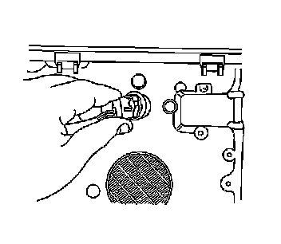

Solar Sensor: Service and Repair
Sun Load Sensor Replacement
Removal Procedure
1. Remove the defroster grille. Refer to Defroster Grille Replacement (Defroster Grille Replacement) .

2. Remove the sunload sensor from the defroster grille by twisting the sensor 1/4 turn counter clockwise.
3. Disconnect the sunload sensor electrical connector.
4. Remove the sunload sensor.
Installation Procedure
1. Connect the sunload sensor electrical connector.
2. Install the sunload sensor to the defroster grille by twisting the sensor 1/4 turn clockwise.
3. Install the defroster grille. Refer to Defroster Grille Replacement (Defroster Grille Replacement) .